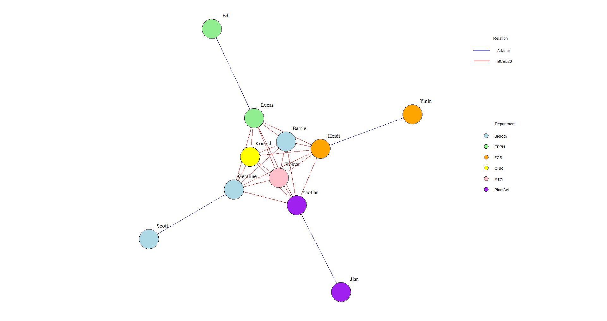

In this assignment, we’ll consider some of the tools and techniques for visualizing network data. Network data is characterized by two unique items that are not found in tabular or spatial data - Nodes and Links. In addition, there is a sub-type of network data that we will consider - Hierarchical or Tree data. Let’s practice a few visualizations to get a feel for how these things work.
ASSIGNMENT1-3
Improve the network above by:
Coloring the edges according to Advisor / BCB520 attribute.
Coloring the nodes according to Department.
Adujsting the labels to improve readability.
Code
Code
library(igraph)
Warning: package 'igraph' was built under R version 4.2.3
Attaching package: 'igraph'
The following objects are masked from 'package:stats':
decompose, spectrum
The following object is masked from 'package:base':
union
Code
library(readxl)
Warning: package 'readxl' was built under R version 4.2.3
Code
library(dplyr)
Warning: package 'dplyr' was built under R version 4.2.3
Attaching package: 'dplyr'
The following objects are masked from 'package:igraph':
as_data_frame, groups, union
The following objects are masked from 'package:stats':
filter, lag
The following objects are masked from 'package:base':
intersect, setdiff, setequal, union
Fig.1 Relationship Network of BCB520 Course and Advisor-Student Interactions across Different Departments. Edge colors: Blue for “Advisor” relationships, Red for “BCB520” relationships, Node colors: Representing different departments (Biology, EPPN, FCS, CNR, Math, PlantSci)
Figure 1 presents the improved network graph, showcasing the relationships between students, advisors, and course participants in the BCB520.
The enhancements made to the network graph include:
Edge colors: Blue edges represent “Advisor” relationships between students and their advisors, while red edges represent “BCB520” relationships, indicating that both individuals are participants in the BCB520 course.
Node colors: Different colors were used to represent various departments, including Biology, EPPN, FCS, CNR, Math, and PlantSci. Individuals from the same department share the same node color.
Label placement: Labels were positioned next to the nodes instead of inside them, enhancing clarity and avoiding overlap. These improvements significantly enhance the visual appeal, interpretability, and ability of the network graph to convey meaningful information about the relationships within the BCB520 course and across different departments.
Fig. 2 Multi-layout Comparison of Relationship Network. (a) layout_nicely: Force-directed layout for aesthetically pleasing visualization with minimal edge crossings, (b) layout_with_fr: Fruchterman-Reingold force-directed layout, attracting connected nodes and repelling unconnected ones, (c) layout_with_kk: Kamada-Kawai force-directed layout based on shortest path distances, revealing symmetry and structure , (d) layout_with_graphopt: Graphopt algorithm layout using simulated annealing, minimizing edge crossings and total graph area,Edge colors: Blue for “Advisor” relationships, Red for “BCB520” relationships, Node colors: Representing different departments (Biology, EPPN, FCS, CNR, Math, PlantSci)
Eventually, I found that the results of these algorithms seem to be very similar, and they can effectively show the relationships and structures in the network